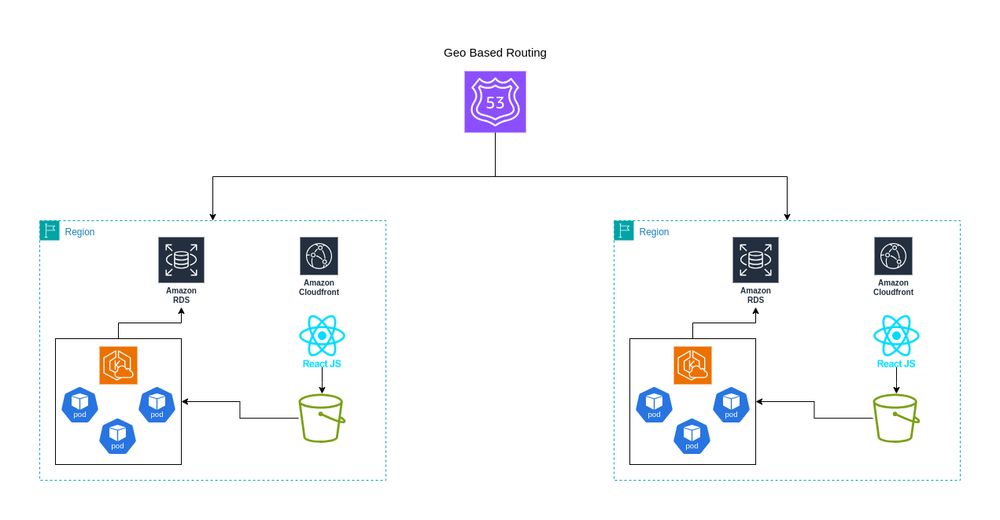

High-Level Architecture¶
The KnowledgeCity platform is designed to be a cloud-native, multi-regional, and highly available system capable of serving users from different parts of the world with low latency and strong regional compliance.

Core Principles¶
- Multi-Regional Deployment: U.S. and Saudi Arabia are used as primary regions.
- High Availability: Each region spans multiple availability zones to ensure 99.99% uptime.
- Separation of Concerns: Frontend, monolith, microservices, and data pipelines are clearly separated.
- Data Residency: User data is stored in the region of origin (Saudi for Saudi users, U.S. for U.S. users).
Architecture Components¶
- Frontend: Deployed via Amazon S3 and served globally using Amazon CloudFront.
- Backend (Monolith): A PHP application hosted in Amazon EKS, handling core logic.
- Microservices: Analytics, video conversion, and other domain-specific services in EKS.
- Storage: Amazon S3 with cross-region replication and intelligent tiering.
- Databases: ClickHouse for analytics, RDS for structured app data.
- Event Bus: Amazon EventBridge used for decoupled, event-driven architecture.
- Global CDN: Ensures fast delivery of video and frontend assets.
Reliability and Redundancy¶
- Multi-AZ within each region.
- Cross-region S3 replication for educational content.
- Stateless services running behind load balancers.